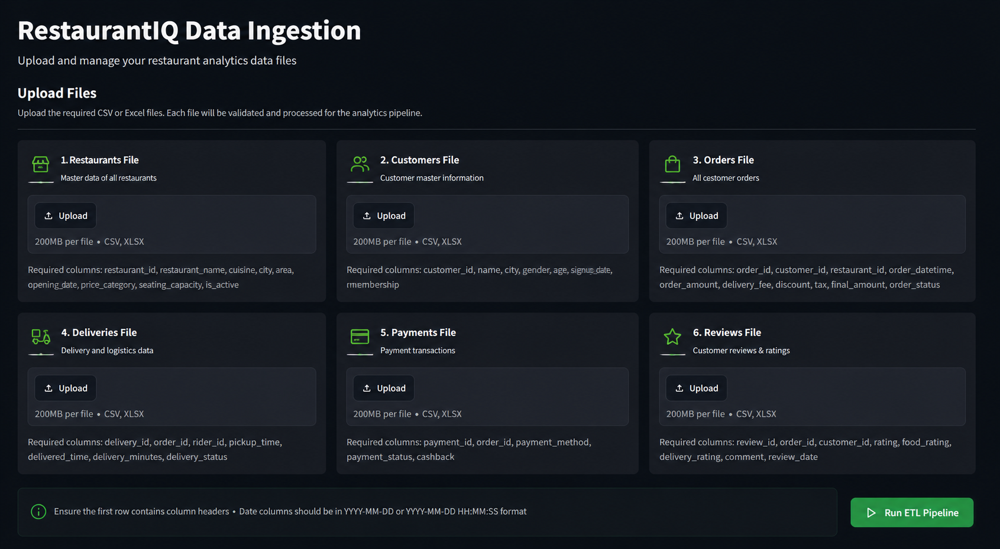

Sales & Revenue
Revenue trends, order volume, average order value, city performance and restaurant contribution.
RestaurantIQ is an end-to-end analytics platform that brings together operational data, automated ETL, SQL analytics, and interactive Power BI reporting.
Orders, customers, restaurants, deliveries, payments and reviews can live in separate files and systems. Before useful analysis can happen, the data has to be validated, cleaned, transformed and brought together.
RestaurantIQ turns that messy process into a repeatable analytics workflow.
A simple ingestion-to-insight pipeline designed around the way analytics teams actually work.
CSV / Excel files from different business functions enter through the data management portal.
Schema checks, data types, missing values, duplicates and relationship consistency are checked.
Pandas processes the incoming datasets and prepares them for centralized analytics.
Cleaned data is organized into a centralized relational database for reliable querying.
SQL-backed analytical models and DAX measures turn the data into interactive business dashboards.
The platform separates ingestion, processing, storage, analytics and visualization instead of putting everything into one dashboard.
CSV / Excel
Data management portal
ETL & data quality
Central data layer
Business intelligence
Raw data can change without rebuilding the dashboard. The database becomes the central source of truth, while Power BI focuses on modeling, measures and visualization.
Teams can provide familiar CSV/Excel files. RestaurantIQ handles the ingestion and processing before the data reaches the analytics layer.
The Streamlit application acts as the entry point for business data. It validates incoming files, runs the ETL workflow and reports the processing status before the database is updated.

Not just charts. The platform is designed to help answer the questions a restaurant operations team would actually ask.
Revenue trends, order volume, average order value, city performance and restaurant contribution.
New vs returning customers, order frequency, retention and high-value segments.
Average delivery time, late deliveries, peak periods and city-level bottlenecks.
Restaurant rankings, ratings, cuisine trends, order contribution and performance.
Interactive Power BI reporting with reusable measures, filters and drill-down analysis.
Each technology is used for a specific part of the workflow.
The project is being built in stages. This page documents the final system; the Streamlit portal will provide the hands-on data ingestion experience once the ETL layer is connected.